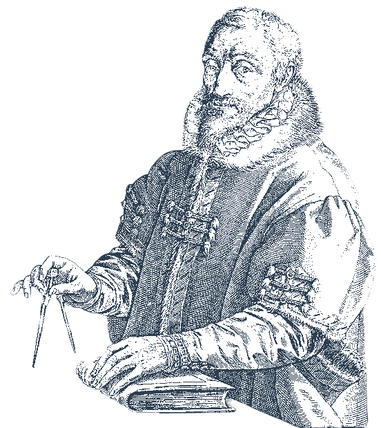

1543
the year I was born, in the city of Antwerp.
Yes, that’s me. Sorry for the staring, just happy you’re here. Now you can follow me through my story from young bookshop helper to master printer of the legendary Officina Plantiniana.
1543
the year I was born, in the city of Antwerp.
From a young age, I was fascinated by words and languages. Through self-study, I taught myself to read and speak not only Dutch, my native tongue, but also French, Italian, Spanish, and eventually Latin. Books were my teachers, and curiosity was my guide.
By the time I turned fifteen, in 1558, I found myself working in the bookshop of Christoffel Plantin.

I need to sort these books by language.Can you help me place them in the right
order? Just drag and drop them.
Hint:
Arrange them in the order I learned the languages.
Les Douleurs Chrétiennes
De Constantia
Constancia
del
Alma Fiel
De Standvastige
Ziel
Costanza
dell’Anima Fedele
Her name was Martine Plantin, the second daughter of my mentor Christoffel Plantin. It was a marriage built on love, but it also shaped the future of the printing house. Plantin had no son to carry on his life's work. By marrying Martine, I became his official heir. The Officina Plantiniana would stay in trusted family hands.
1570
In the years that followed, I became his closest collaborator. I worked with care and determination to strengthen the press.
When Plantin moved to Leiden between...
1583 & 1585
To work on new projects, my brother-in-law Franciscus Raphelengius and I led the Antwerp printing house.
This time taught me what it meant to truly run a business and carry on a legacy.
You are standing in front of a large wooden door. It leads to the next part of my story, but it is locked.
The city seemed to hold its breath. No clatter of printing presses, no murmur of customers. Only silence and the soft creak of wooden floors beneath my steps. Christophe Plantin died.
1589
In the study of my father-in-law, the great oak desk stood exactly as he had left it. Upon it rested a sheet of parchment, its corner pinned beneath a heavy ink pot. It was the will of Christophe Plantin.
He was more than a master printer. He was my teacher, my second father. And now he was gone. My eyes rested on the elegant letters of his hand. I knew their meaning, he had confided them to me before. But today, with his chair empty and his voice silent, those words carried a weight I had never felt before.
He was not simply leaving me his printing house. He was entrusting me with his life’s work. There was no son to carry it forward. Only a son-in-law who had learned his craft, earned his trust, and now had to bear his legacy.
This was not a gift. It was a duty. And at the same time, the greatest honor I could ever receive.
Legacy of the Printing Business: Plantin’s will focused on passing his world-renowned Officina Plantiniana to his son-in-law, Jan Moretus, ensuring its continuity.
Financial Provisions: He provided for his family, including daughters and relatives, through various financial arrangements.
Religious Affiliation: Committed to the Catholic Church, Plantin wanted his business to remain Catholic, reflecting his previous works like the polyglot Bible and the Index of Prohibited Books.
Management and Ownership: The will outlined business management and ownership to ensure a smooth transition.
Family Peace: His wife, Jeanne Rivière, waived certain claims to maintain harmony among their children.
In the presence of witnesses I declare my
agreement with the provisions of my father-in-law.
Autograph:
Between 1590 and 1610, I publish nearly 640 editions. Most of them are liturgical and religious works, essential for worship and faith. Yet the presses of my Officina also produce humanist and scientific books from renowned authors such as Justus Lipsius, Abraham Ortelius, and Rembert Dodoens.